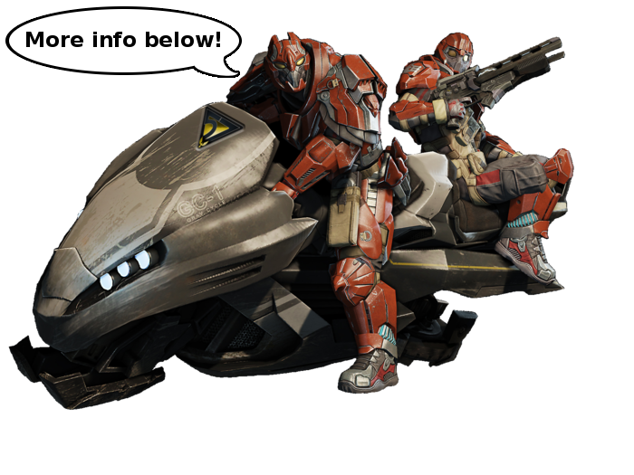

Ok.. Wait, what's a PUG?
PUG is an acronym for 'Pick Up Game'. It's a casual but organised game of
'capture the flag' in Tribes: Ascend consisting of 2 teams of 7-9 players.
Each team is picked by a captain who picks players based on their prefered role (such as flag capper, flag defence etc).
The teams then play each other on a private server, making heavy use of voice communication to coordinate the offence and enforce the defence.
This coordination leads to intense, fast-paced and clutch play,
which leads to some ridiculously fun times.
Sounds good, but who can play?

You can! The only requirements to play a pug is to have a mic for voice chat, and to be willing to work as part of a team.
There is no minimum level requirement to play. As long as you have a good understanding of how the game works, you'll be able to help your team. If you are still concerned about this then use level 15 as a marker that you are pug ready!
One small exception is capping. It would be best if you only roled a capper if you had at least 1 fast route (250+ km/h) per team per competitive map. If you'd like to learn new routes, check out the cappers section of the roles page.
It still sounds a little intimidating...
Don't worry about it, we get newcomers everyday! If you have any questions feel free to ask and someone online should help you out.
There are also "newblood" pugs, which are a pugs specifically aimed at new players. These pugs are a mix of new players and experienced players with the purpose of helping people get to grips with a comp style of play. They are a brand new feature and are happening every day, so if you are concerned then this is definitely something to take advantage of!
And remember, if you're new to pugs or tribes, just let people know! We are very receptive to new players, and saying you are new lets captains pick teams that ensure you're not left on your own in a game or given too much responsibility.
Ok let's go!
First you need to download and install Mumble. Mumble is low latency voice chat software that is used to organise matches.
It's a good idea to set up your audio correctly in mumble, by going into
'Configure > Audio Wizard' and following the instructions.
Next you need to connect to a mumble server by hitting 'Server > Connect' and entering your local server's information. If you don't live in any of the following areas, select a server that would offer the best ping!
Then you need to join the PUG channel in mumble and pick your role!
The PUG channel will probably the one with 'PUG' in the title, and is likely to have the most people. Inside the PUG channel there should a 'roles' subchannel which is where you join the role you want to play.
There may also be a 'Played previous game' subchannel where you join just after playing a game. This is so the people who did not get to play get picked first for the next game.

Finally you wait for a game!
Games will usually happen if there are 14 people in roles. Captains' sometimes volunteer, but regulars are often "coerced" into being captain to get the game going.
When you hear your name being picked, join the server channel for your team (check what channel your captain is in to see what server and team). The easiest way to join the server is to add someone playing as a friend, and follow them in. The server password is usually in the server comment (see image), otherwise just ask.
P.S. While you're waiting, it might be a good idea to check out this 2 minute introduction to competitive tribes. I'd also highly recommend this thorough guide to the different roles in pugs.

Tribes has a great community!
Tribes is a great game, and the more people who join the community the better!
Whether you're looking to improve your game, keep up to date with the latest competitions, discuss the latest update or have fun with friends, the Tribes community has something for you.
Forums
News
Streams
(Please contact me to add your stream)
Casts
(Please contact me to add your cast)
Contact
Have a suggestion on how to improve this page? Great!
-
In-game name: y0pb0p
-
Mumble name: y0p - Spinfusor EU
-
Reddit name: bluplr
-
Email me: y0p@bluplr.com